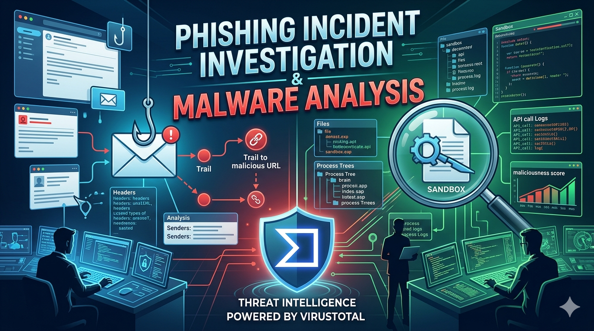

Home Lab Experience
Demonstrates hands-on cybersecurity practice using industry tools to analyze threats, investigate network activity, and strengthen defensive security skills through practical lab environments.

SIEM Monitoring & Brute-Force Attack Detection
Simulated SOC environment using Wazuh to detect and analyze brute-force attacks in an isolated home lab.
View Home Lab ProjectCase Studies & Projects
This section highlights hands-on cybersecurity projects and case studies focused on incident investigation, threat modeling, and security automation. It demonstrates technical proficiency in Python scripting, network audits, and risk assessment using frameworks like PASTA and SOC standards. These projects showcase practical skills in identifying vulnerabilities and applying defensive strategies across Windows, Linux, and network environments.

Phishing Incident Investigation & Malware Analysis
Conducted a simulated phishing incident investigation, analyzing a malicious email attachment, identifying indicators of compromise (IOCs), documenting findings, and applying incident response procedures to support threat detection and remediation.
View Case Study
Internal Security Audit
Conducted a scenario-based internal security audit for a fictional company, identifying risks, evaluating controls, and assessing compliance against NIST CSF, SP 800-53, CIA Triad, and OWASP principles.
View Case Study
Vulnerability Assessment
Risk-based assessment of a publicly exposed e-commerce database.
View Case Study
Threat Modeling with PASTA for Secure Application Design
Applied the PASTA threat modeling framework to assess application security risks and determine whether a new shopping app is safe to launch.
View Case Study
Python Automation for IP Allow List Management
Python-Based Security Automation for Access Control Management
View Case StudyCertifications
Google Cybersecurity Certificate
Comprehensive cybersecurity training program focused on security operations, threat detection, incident response, networking, Linux, SQL, SIEM tools, and security analysis.
View All Certifications

CompTIA Security+
Global certification validating baseline skills necessary to perform core security functions and pursue an IT security career. Covers threats, attacks, vulnerabilities, architecture, and implementation.

About Me
I am a cybersecurity graduate with a strong security mindset and hands-on experience in incident
analysis, vulnerability assessment, security monitoring, and security automation through structured
projects and lab environments. I continuously build practical experience in defensive security
operations, threat analysis, and risk assessment while expanding my technical skills in scripting,
system security, and network monitoring.
Through hands-on projects, I have investigated security events, analyzed network traffic and
system vulnerabilities, automated administrative security tasks using Python, and documented
findings to support risk mitigation and strengthen system defenses. I have worked in Linux-based
environments and utilized tools such as Wireshark, tcpdump, Nmap, SQL, and SIEM platforms like
Wazuh to better understand attack behavior, access control, and security monitoring workflows.
I am committed to applying my skills in real-world environments while continuing to grow in security
operations, threat detection, and cybersecurity automation. Guided by strong ethical values, I follow
security best practices, policies, and defensive principles to help protect systems and sensitive
information. My ability to learn quickly, think analytically, and communicate technical findings
allows me to effectively support organizational security goals in fast-paced environments.